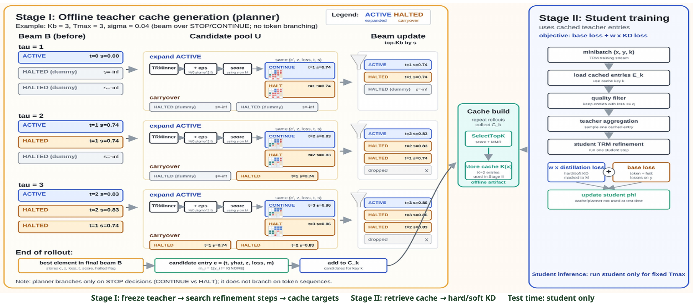

Reasoning Systems
LLM reasoning, tiny recursive models, planning, and distillation methods for more reliable inference.
I am a Ph.D. student in Computing Science at the University of Alberta, advised by Prof. Mi-Young Kim and Prof. Randy Goebel. My research interests span reasoning in language models, planning and distillation for small neural reasoning systems, online learning, reinforcement learning, and robust decision-making under uncertainty.
Before my Ph.D., I completed an M.Sc. in Statistics at the University of Toronto and worked as a data scientist and ML engineer in recommender systems, NLP, and digital marketing platforms.
LLM reasoning, tiny recursive models, planning, and distillation methods for more reliable inference.
Robust bandit algorithms for sequential decision-making under heavy-tailed rewards and adversarial corruption.
Experience building recommender systems, NLP pipelines, and production ML workflows with PyTorch, TensorFlow, Airflow, Docker, and AWS.

Findings of ACL 2026A two-stage teacher-cache distillation recipe for Tiny Recursive Models that shifts compute to offline target planning while leaving student-time inference unchanged.
Variance-aware robust generalized linear bandits under heavy-tailed rewards and reward corruption.